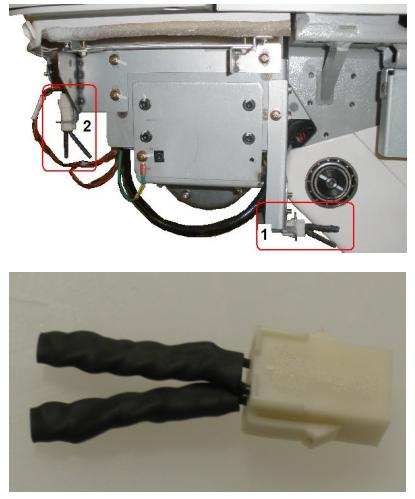

Operating Documentation
Direction 5307452-8EN, Rev# 4
Discovery CT750 HD Service Methods - Adv
Operating Documentation |
TOUCH SENSOR (JUMPER) SERVICE JUMPER
During service, the table touch sensors must remain operable for the table to fully function. To operate the table with the covers removed, the sensors must be jumpered.
| NOTE: | There are two jumpers: a 6 pin (PN#5120570) and a 4 pin (PN#5120569). Use the correct jumper at the location of each touch sensor as required. |
Illustration 1: GT Series Table Touch Sensor (4 Pin Jumper)

| Item 1 - 4 Pin jumper shown in storage position |
| Item 2 - 4 Pin jumper shown as typically used |